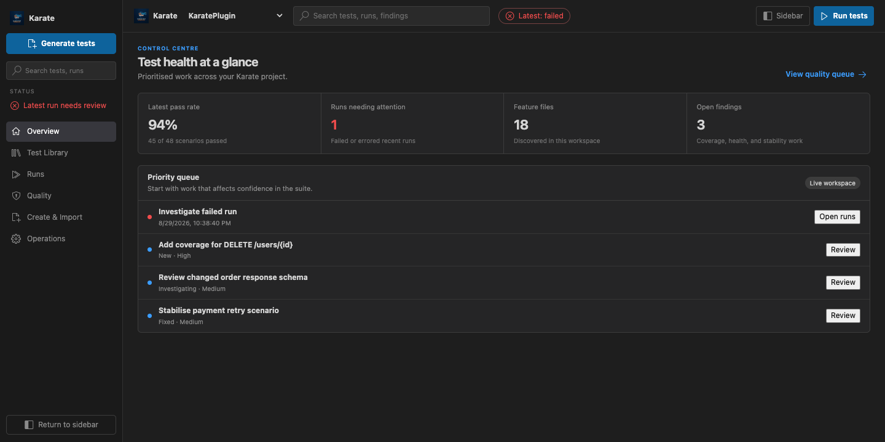

One AI route, everywhere
Generation, imports, coverage, repairs, and MCP workflows now share the selected provider and a quota-conscious Copilot model policy. Fallbacks stay within that provider.
Create, execute, organize, and improve Karate tests from one focused VS Code workspace—with dependable project-aware runs and AI that stays under your control.

What’s new
Version 2.0.1 sharpens the new management workspace with unified AI routing, immediate progress feedback, and repaired execution paths.
Generation, imports, coverage, repairs, and MCP workflows now share the selected provider and a quota-conscious Copilot model policy. Fallbacks stay within that provider.
Long-running actions acknowledge input instantly, keep status visible, and guard against accidental duplicate starts across generation, execution, analysis, repair, and export.
Move between the Activity Bar and full Test Management workspace without losing your place. Reopening focuses the existing view instead of creating duplicates.
Simple repositories, Maven and Gradle modules, custom runners, and exact CodeLens scenario launches resolve consistently from the selected feature.
Analyze an OpenAPI specification by itself, then optionally add feature files when you want exact scenario mapping and traceable evidence.
The workspace
The 2.0 workspace turns scattered commands into a connected system for everyday API quality work.
Browse scenarios with tags, ownership, lifecycle status, stability, source location, and Zephyr traceability—all backed by Git-friendly workspace data.
Run a feature, exact scenario, folder, tag set, or saved profile through standalone Karate, Maven, Gradle, or your configured runner.
Generate from OpenAPI, Confluence, Postman, HAR, GraphQL, Jira, directories, and captured sessions—with optional AI enhancement.
Bring coverage gaps, specification changes, project health, flakiness, execution failures, and Bug Hunter results into one guarded queue.
Choose Copilot, another VS Code model provider, Claude API, or local Ollama. Efficient routing is the default; premium models remain an explicit choice.
Route CI repair work, publish outcomes to Zephyr Scale, expose MCP tools, learn shared styles, and report bugs with redacted diagnostics.
How it flows
Turn API contracts and real traffic into readable Karate scenarios.
Execute at the right project boundary and follow progress in place.
Inspect runs, coverage, stability, and quality signals together.
Repair, verify, and automate without leaving the workspace.
Start testing
Install the extension, open a folder with feature files or an API specification, then select the Karate icon in the Activity Bar.